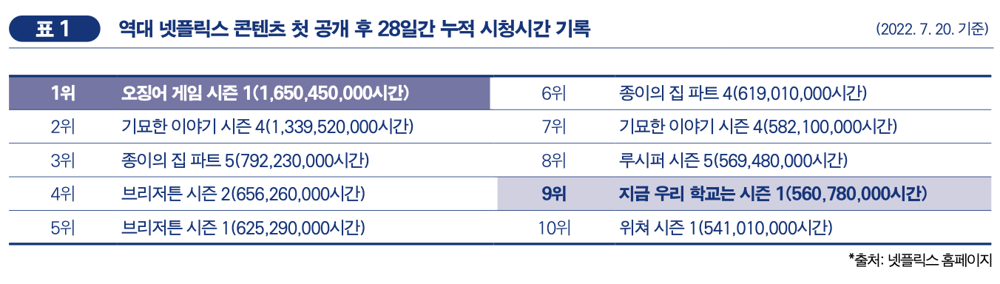
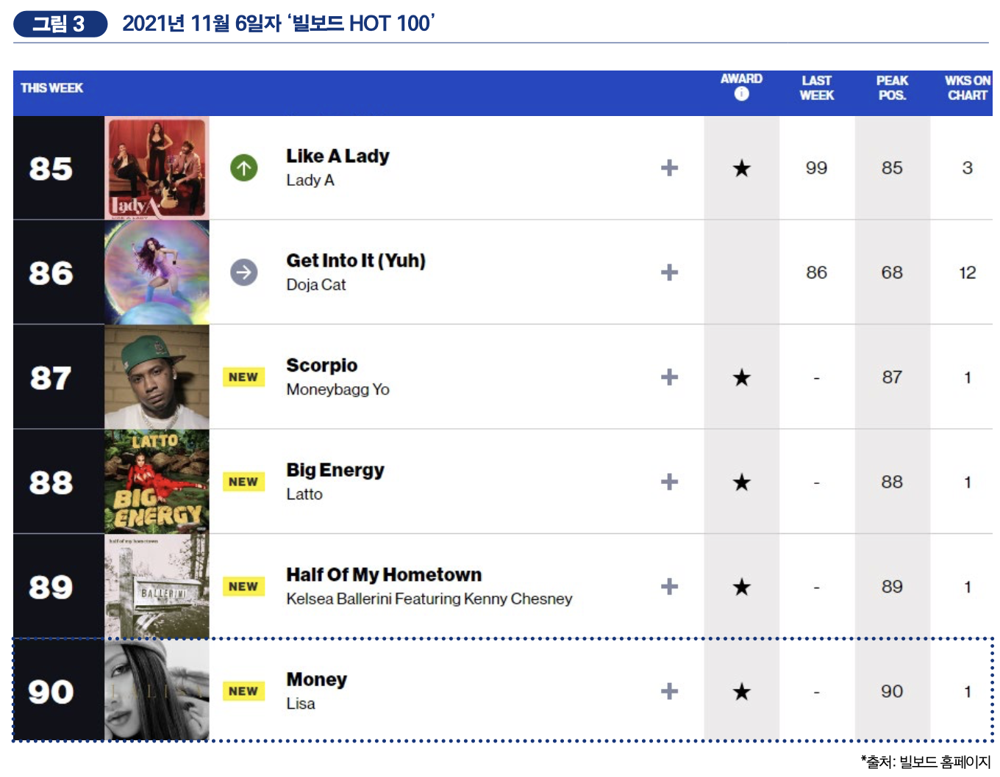
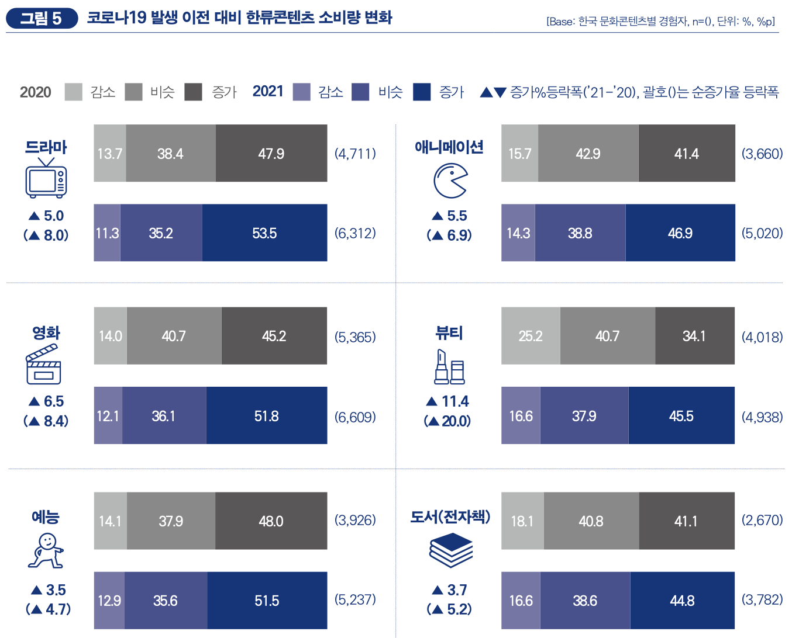
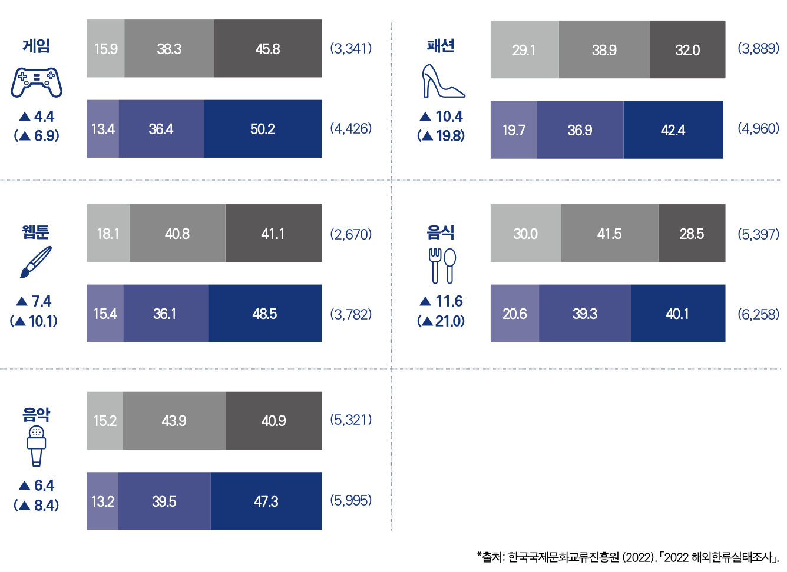
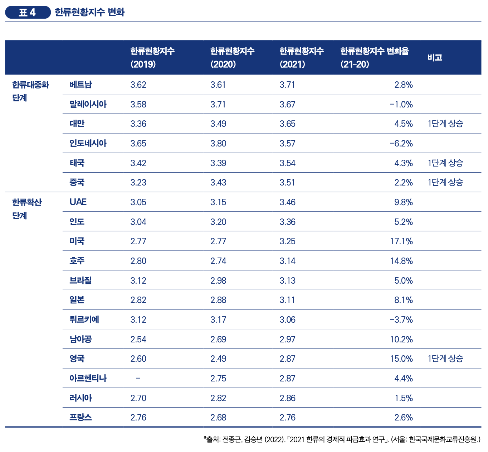
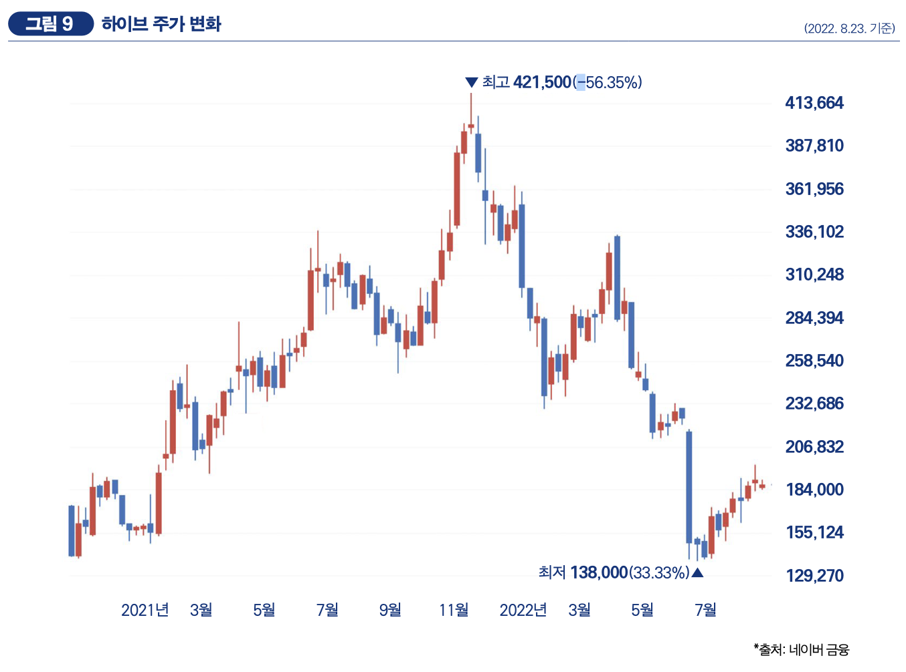

Annual Issue
'Squid Game' Gloabl Syndrome
It is no exaggeration to say that the Korean Wave has been driven by the "Squid Game" over the past year. Since its first release on September 17, 2021, "Squid Game" has renewed all records related to global OTT content. On October 13, 2021, Netflix announced that "Squid Game" was the content that recorded the largest number of viewing households ever (Jungang Ilbo, October 13, 2021). In the first 28 days, 142 million households watched "Squid Game," surpassing 82 million households in the previous record of "Bridgerton," and also the first record to surpass 100 million households. In addition, Netflix officially unveiled the viewing time for each content on its website, and "Squid Game" recorded about 1.65 billion hours of cumulative viewing time in the first 28 days. This is the No. 1 record ever, and there is a 300 million hour gap with Season 4 of "Stranger Things," the second place.
K-pop, and K-Fandom
It has been a long time since hybridity has emerged as one of the characteristics and popularity factors of K-Pop, but that degree continues to be strengthened. From the formation of idol group members to collaboration with overseas experts, transnational elements have become essential, not optional, in the entire process of producing and distributing K-Pop content. In particular, the solo debut album of BLACKPINK Thai member Lisa, released in September 2021, sparked a re-discussion of K-Pop identity. The album "LALISA," named after Lisa's real name, recorded 750,000 copies in its first week (sales volume in the first week of release), the highest sales of K-Pop female solo artist albums ever (as of August 4, 2022). The title song "LALISA" of the same name has more than 500 million views on YouTube and topped the iTunes Song Chart in 65 countries. In addition, the track "MONEY" was streamed more than 400 million times on Spotify and ranked 90th on "Billboard HOT 100" for the first time as a K-Pop female singer.
Prolonged COVID-19 pandemic and 'K-Wave'
Compared to before the COVID-19 outbreak in 2021, the content that increased consumption (increasing response ratio) was mainly video content such as "drama" (53.5%), "movie" (51.8%), "entertainment" (51.5%), and "game" (50.2%). Compared to 2020, the ratio of "decreased" and "similar" responses in all contents decreased, while the ratio of "increased" responses increased. Compared to the previous year's growth rate, the net growth rate also increased from food (21.0%p) to entertainment (4.7%p). This seems to be the ripple effect of "Squid Game" along with the generalization of non-face-to-face consumption behavior due to the prolonged COVID-19. Like the previous year, content that is important for face-to-face consumption, such as "beauty" (16.6%), "fashion" (19.7%), and "food" (20.6%), had a higher percentage of "decreased" responses than other content.
 Expanding the Popularization of K-Wave
Except for some countries, the Korean Wave status index has risen in most countries. In particular, the United States (17.1%), the United Kingdom (15.0%), Australia (14.8%), and South Africa (10.2%) showed double-digit index growth compared to the previous year. This is the opposite of the decline in most of the Americas and European countries in the previous year.
K-Pop After BTS, and 'K-Wave'
On June 14, 2022, BTS announced a temporary suspension of their group activities nine years after their debut. Although it is not the group's disbandment, there are many voices concerned that their temporary suspension of activities will have a big impact not only on K-Pop but also on the entire Korean Wave. In fact, the stock price of the agency Hive plunged nearly 25% a day after the announcement of the suspension of activities, and the market capitalization also evaporated by nearly 2 trillion won (June 15, 2022 JoongAng Ilbo).
